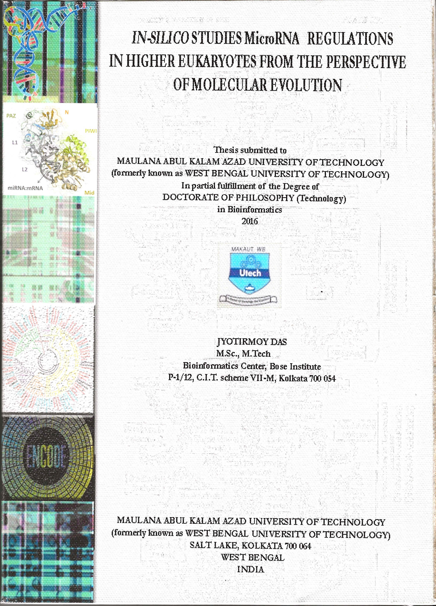

Publications
Doctoral thesis

Thesis title: In-silico studies of microRNAs regulation in higher eukaryotes from the perspective of molecular evolution.
Topics of Reasearch: Bioinformatics, Molecular Evolution, MicroRNAs, Human Diseases, Epigenetics.
Supervisor: Prof. T.C. Ghosh
Work place: Bose Institute (J.C. Bose Institute), Kolkata, India
University: Maulana Abul Kalam Azad University of Technology (formerly known as West Bengal University of Technology), West Bengal, India.
Manuscript in submitted/under review
Volpe, M & Das, J. methylR: a graphical interface for comprehensive DNA methylation array data analysis. 2022 (Under review in Bioinformatics, Oxford)
Verma, D; Kasic, NK; Jeppsson, F; Bivik Eding, C; Lysiak, M; Fekri, S; Das, J; Enerbäck, C. Differential DNA methylation of miRNA-encoding genes in psoriatic epidermis highlights the Wnt pathway. 2022 (Under revised and resubmitted in Journal of Investigative Dermatology)
Lundquist, H; Andersson H; Chew, MS; Das, J; Turkina, MV; Welin A. The Olfm4-defined human neutrophil subsets differ in proteomic profile in healthy individuals and patients with septic shock. 2022. (Under review Journal of Innate Immunity)
Braian, C; Karlsson, L; Das, J; Lerm M. Selected β-glucans act as immune-training agents by improving anti-mycobacterial activity in human macrophages. 2022. (submitted to Journal of Innate Immunity)
Published in peer-reviewed journals
2022
Das J, Idh N, Sikkeland LI, Paues J, Lerm M. DNA methylome-based validation of induced sputum as an effective protocol to study lung immunity: construction of a classifier of pulmonary cell types. Epigenetics. 2022 Aug 3;17(8):882-93.
Link to the publication
Huoman J, Sayyab S, Apostolou E, Karlsson L, Porcile L, Rizwan M, Sharma S, Das J, Rosén A, Lerm M. Epigenetic rewiring of pathways related to odour perception in immune cells exposed to SARS-CoV-2 in vivo and in vitro. Epigenetics. 2022 Jun 26:1-7.
Link to the publication: PDF
Link to the publication: ePub

Łysiak M, Das J, Malmström A, Söderkvist P. Methylation associated with long- or short-term survival in glioblastoma patients from the Nordic phase 3 trial. Front Genet. 2022 Aug 25;13:934519.
Link to the publication: PDF
Link to the publication: ePub
2021

Karlsson L, Das J, Nilsson M, Tyrén A, Pehrson I, Idh N, Sayyab S, Paues J, Ugarte-Gil C, Méndez-Aranda M, Lerm M. A differential DNA methylome signature of pulmonary immune cells from individuals converting to latent tuberculosis infection. Scientific Reports. 2021 Sep 30;11(1):1-3.
Link to the publication

Kalsum S, Andersson B, Das J, Schön T, Lerm M. A high-throughput screening assay based on automated microscopy for monitoring antibiotic susceptibility of Mycobacterium tuberculosis phenotypes. BMC Microbiology. 2021 Dec;21(1):1-4.
Link to the publication

Zhu GH, Azharuddin M, Islam R, Rahmoune H, Deb S, Kanji U, Das J, Osterrieth J, Aulakh P, Ibrahim-Hashi H, Manchanda R, Nilsson PH, Mollnes TE, Bhattacharyya M, Islam MM, Hinkula J, Slater NKH, Patra HK. Innate Immune Invisible Ultrasmall Gold Nanoparticles—Framework for Synthesis and Evaluation. ACS Applied Materials & Interfaces. 2021 May 12;13(20):23410-22.
Link to the publication

Singhania A, Dubelko P, Kuan R, Chronister WD, Muskat K, Das J, Phillips EJ, Mallal SA, Seumois G, Vijayanand P, Sette A, Lerm M, Peters B, Lindestam Arlehamn C. CD4+ CCR6+ T cells dominate the BCG-induced transcriptional signature. EBioMedicine. 2021 Dec 1;74:103746.
Link to the publication
2019
Das J, Verma D, Gustafsson M, Lerm M. Identification of DNA methylation patterns predisposing for an efficient response to BCG vaccination in healthy BCG-naïve subjects. Epigenetics. 2019 Jun 3;14(6):589-601.
Link to the publication: PDF
Link to the publication: ePub
2018

Sen K, Bhattacharyya D, Sarkar A, Das J, Maji N, Basu M, Ghosh Z, Ghosh TC. Exploring the major cross-talking edges of competitive endogenous RNA networks in human Chronic and Acute Myeloid Leukemia. Biochimica et Biophysica Acta (BBA)-General Subjects. 2018 Sep 1;1862(9):1883-92.
Link to the publication
2014

Das, J., Podder, S., & Ghosh, T. C. (2014). Insights into the miRNA regulations in human disease genes. BMC genomics, 15(1), 1-7.
Link to the publication
2013

Das, J., Chakraborty, S., Podder, S., Ghosh, T.C., 2013. Complex-forming proteins escape the robust regulations of miRNA in human. FEBS letters 587, 2284–2287.
Link to the publication
2011

Gupta, S., Kumari, K., Das, J., Lata, C., Puranik, S., & Prasad, M. (2011). Development and utilization of novel intron length polymorphic markers in foxtail millet (Setaria italica (L.) P. Beauv.). Genome, 54(7), 586-602.
Link to the publication
BioRxiv/MedRxiv publication

Das J, Idh N, Pehrson I, Paues J, Lerm M. A DNA methylome biosignature in alveolar macrophages from TB-exposed individuals predicts exposure to mycobacteria. medrxiv. 2021 Jan 1.
Link to the publication

Pehrson I, Das J, Idh N, Karlsson L, Rylander H, af Segerstad HH, Reuterswärd E, Marttala E, Paues J, Méndez-Aranda M, Ugarte-Gil C. DNA methylomes derived from alveolar macrophages display distinct patterns in latent tuberculosis-implication for interferon gamma release assay status determination. MedRxiv. 2021 Jan 1.
Link to the publication

Huoman J, Sayyab S, Apostolou E, Karlsson L, Porcile L, Rizwan M, Sharma S, Das J, Rosen A, Lerm M. Mild SARS-CoV-2 infection modifies DNA methylation of peripheral blood mononuclear cells from COVID-19 convalescents. medRxiv. 2021 Jan 1.
Link to the publication

Pehrson I, Braian C, Karlsson L, Idh N, Danielsson EK, Andersson B, Paues J, Das J, Lerm M. DNA methylation profiling of immune cells from tuberculosis-exposed individuals overlaps with BCG-induced epigenetic changes and correlates with the emergence of anti-mycobacterial’corralling cells’. medRxiv. 2021 Jan 1.
Link to the publication

Lundquist H, Andersson H, Chew MS, Das J, Turkina MV, Welin A. The Olfm4-defined human neutrophil subsets differ in proteomic profile in septic shock. bioRxiv. 2022 Jan 1.
Link to the publication